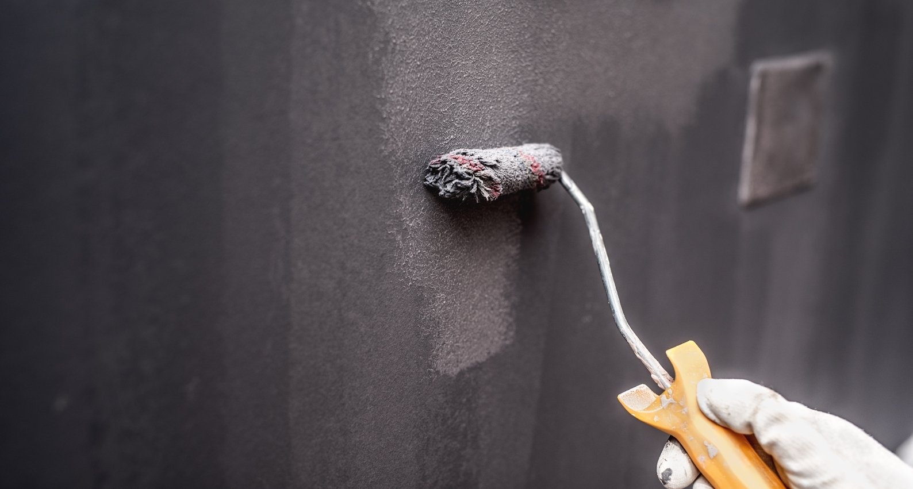
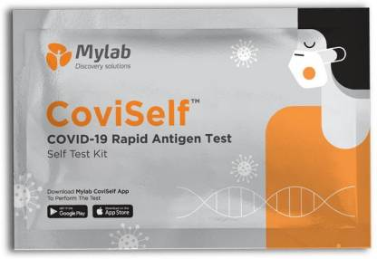
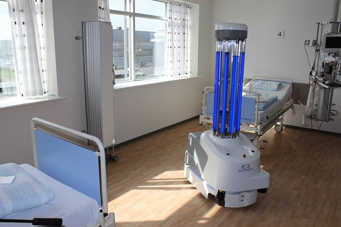

Latest Innovations to Fight against COVID-19
-
Vaccines

The vaccine that we have now is a mRNA type, which means that it won't give you/expose you to any form of the virus, but since it is made of Ribonucleic Acid, it will instead instruct our cells on how to fight the real virus (although there is a myth that the COVID vaccine gives you the virus, but it won't).
When the vaccine is injected in your arm, some of your muscle cells will take in the instructions which the vaccine gave, and will create a harmless spike protein, and this type of protein is found on the outside of the virus which causes COVID. After that, the muscle cells destroy the instructions for how to make the spike protein. The spike protein is now on the surface of the muscle cells. Your immune system will now detect that anything that has spike protein on it is now a threat, so it starts making antibodies to fight it. Now your body can now spot COVID-19 and fight it off even before it starts making cells in your body.
-
Antiviral Surface Coating
Having to clean surface takes a lot time, especially when you have to do it multiple times a day to keep the place sterile. This is why antiviral surface coatings are crucial during the pandemic. We just need to apply it once, which makes the place where the coating is sterile for a long time.
The coating is made of synthetic antimicrobial peptides (which are basically mini-proteins). The protein forces the microorganism to burst, like a balloon touching a sharp needle.
-
Home Testing Kits
Mylab's Coviself, India's first self-testing kit for COVID-19 gives results as fast as under 15 minutes, is also approved by the IMCR(Indian Council of Medical Research). IMCR has advised that this kit is only for those who have symptoms or are at a high risk of being in contact with COVID positive people, and will need to take a test at home. If the person becomes positive, then that means that they will not need a confirmatory RT-PCR test, but if negative but the person has symptoms, he/she will need to get a RT-CPR test. The test comes with a pre-filled extraction tube, a biohazard bag, a sterile nose swab and a testing card.
First you need to download the Coviself app and enter all your details, so that the app can capture data on a secure server which is connected with the ICMR portal, where all the test reports will be available to the government. Then, before taking the test, make sure to wash your hands and sterilize the place where the kit is placed. After that insert the swab 2-4 cm inside your nose, and rub it well to collect the specimen. Swirl the swab inside of the extraction tube so that it can mix with the liquid inside, close the tube tightly, and then put two drops from the tube onto the testing card. If a person is positive, then two lines will appear on the testing card but if negative, one line appears on the card.
-
Sterilization Robots
Nowadays, it can be very challenging and even a life-threatning task to clean hospital rooms as there are so many people there. To save their staffs, some hospitals are using sterilization robots to clean places inside the hospital. One of the most effective types of disinfection robots are the HELIOS UV robot.
The robot kills germs in the environment by decomposing their DNA structure, which prevents and reduces the spread of harmful microorganisms (such as viruses and bacteria). It has two modes: air circulating sterilization and disinfection mode, and UV sterilization and disinfection.
The first mode is able to kill the microorganisms in the air. It does this by making air flow into the high-power UV sterilization channel through the purification and and circulation system.
The second mode will make the robot in an automatic state, and the sterilization and disinfection center will emit the UV beams in order to kill harmful microorganisms which make the air more purified and preventing the transfer of those harmful microorganisms in high-risk areas.
-
Glow-In-The-Dark Testing Kits